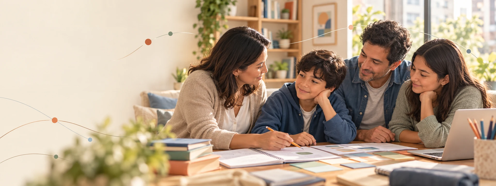
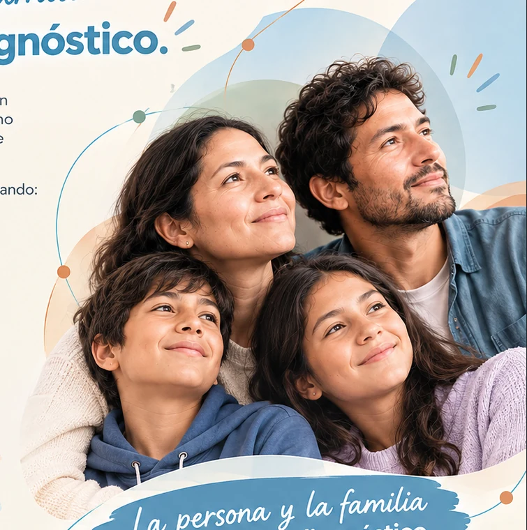
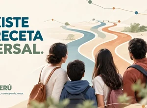
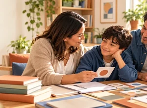
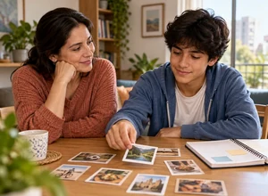

01
Orientación
Comprender una situación, ordenar lo que ya se sabe y decidir un siguiente paso útil.
 RAÍCES PERÚ
Familias y neurodiversidad
RAÍCES PERÚ
Familias y neurodiversidad
Acompañamiento para familias
Raíces ayuda a las familias a ordenar lo que están viviendo, reconocer necesidades y capacidades, explorar apoyos y conectar con la escuela, profesionales o recursos cuando corresponde.

Nuestro punto de partida
No construimos una ruta alrededor de una etiqueta. Primero escuchamos, observamos y comprendemos a la persona, sus relaciones y su entorno.
Una red que sostiene
Familia, escuela, profesionales y comunidad aportan miradas diferentes. Raíces ayuda a ordenar esas voces para construir condiciones más claras, humanas y posibles.
Conocer la filosofía de Raíces
Tres formas de acompañar
Comprender una situación, ordenar lo que ya se sabe y decidir un siguiente paso útil.
Construir una posibilidad concreta, observarla en la vida cotidiana y ajustarla cuando sea necesario.
Preparar información y conversaciones para conectar mejor con la escuela, profesionales o servicios.
Un recorrido sencillo y ajustable

RutaElegir un próximo paso pertinente.
PruebaExplorar una acción pequeña y observable.
RevisiónAprender, ajustar, articular o cerrar.Materiales propios
Raíces desarrolla guías, mapas y recursos prácticos originales. Cada material diferencia evidencia, experiencia, observación, propuesta práctica y normativa.
Los materiales de terceros forman parte de una biblioteca privada de referencia: no se venden, regalan, copian ni redistribuyen.
Conocer el proceso de creaciónBlog Raíces
Compartimos el origen del proyecto, el significado de nuestro nombre y la inspiración andina detrás del símbolo.
Un límite que protege
Raíces no diagnostica, no prescribe, no realiza tratamientos y no reemplaza a profesionales, escuelas ni autoridades competentes.
Leer nuestros compromisos